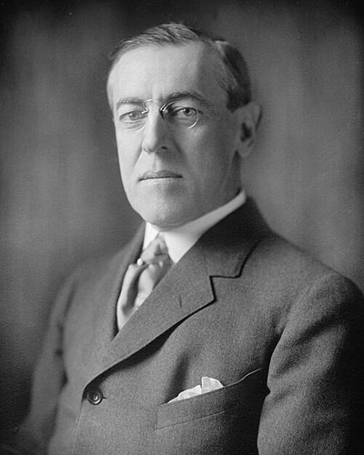

Ideologies / Liberal
What is Liberal Internationalism?
Liberal Internationalism is a political ideology in the Liberal family. Wilson's programme for ending the First World War set out the conditions of a lasting peace: agreements made in public with no secret treaties, freedom of the seas, the removal of trade barriers and the reduction of armaments. Borders in Europe were to be redrawn along lines of nationality and colonial claims settled with weight given to the peoples concerned. A general association of nations would guarantee the independence of great and small states alike.
Peace through open diplomacy, free trade and a league of nations.
Defined from: Woodrow Wilson, Fourteen Points (address to the United States Congress) (1918)
See how close you are to Liberal Internationalism Dare a friend to answer as one

.jpg){kind=link}
Where Liberal Internationalism stands on 13 axes
Each axis runs from 0 to 100. A score of 50 is the middle. On a classic compass it sits in the Libertarian Right quadrant.
| Axis | Position | Score | In words |
|---|---|---|---|
| EconomyMarket to Planned | 25 | Strongly Market | |
| OwnershipPrivate to Collective | 25 | Strongly Private | |
| RightsLiberty to Security | 40 | Leans Liberty | |
| GovernmentDemocracy to Autocracy | 20 | Strongly Democracy | |
| StructureDecentralised to Centralised | 55 | Balanced | |
| NationInternationalist to Nationalist | 20 | Strongly Internationalist | |
| ImmigrationMulticulturalist to Assimilationist | 45 | Balanced | |
| ValuesProgressive to Traditional | 50 | Balanced | |
| TechnologyAccelerationist to Precautionary | 40 | Leans Accelerationist | |
| EnvironmentIndustrialist to Environmentalist | 40 | Leans Industrialist | |
| ReligionSecular to Religious | 45 | Balanced | |
| MilitaryPacifist to Militarist | 40 | Leans Pacifist | |
| TradeFree Trade to Protectionist | 10 | Very strongly Free Trade |
Ideologies closest to Liberal Internationalism
- Ordoliberalism91% alike
- Georgism87% alike
- Lockean Liberalism84% alike
- Third Way83% alike
- Neoliberalism82% alike
Its opposite on this map is Juche, at 27%.
Parties near Liberal Internationalism
- Fine GaelIreland. Securing Your Future (2024)88% alike
- Fianna FáilIreland. Moving Forward. Together. (2024)87% alike
- Christian Democratic Union of 1949Germany. The Düsseldorf Guidelines (1949)85% alike
- Social Democratic Party of 1959Germany. The Godesberg Programme (1959)85% alike
Common questions
What is Liberal Internationalism?
Liberal Internationalism is a political ideology in the Liberal family. Wilson's programme for ending the First World War set out the conditions of a lasting peace: agreements made in public with no secret treaties, freedom of the seas, the removal of trade barriers and the reduction of armaments. Borders in Europe were to be redrawn along lines of nationality and colonial claims settled with weight given to the peoples concerned. A general association of nations would guarantee the independence of great and small states alike.
What does Liberal Internationalism believe?
In one line: Peace through open diplomacy, free trade and a league of nations. Its strongest positions are Free Trade, Democracy, Internationalist. Wilson's programme for ending the First World War set out the conditions of a lasting peace: agreements made in public with no secret treaties, freedom of the seas, the removal of trade barriers and the reduction of armaments. Borders in Europe were to be redrawn along lines of nationality and colonial claims settled with weight given to the peoples concerned. A general association of nations would guarantee the independence of great and small states alike.
Who founded Liberal Internationalism?
Liberal Internationalism is defined here from Fourteen Points (address to the United States Congress) (1918) by Woodrow Wilson. The thinker most tied to it is Woodrow Wilson (1856 to 1924).
Is Liberal Internationalism left wing or right wing?
On a classic two axis compass Liberal Internationalism falls in the Libertarian Right quadrant, which means the economic right and the libertarian side. Left and right hide a lot, though, which is why EthosScales scores it on thirteen separate axes.
How is Liberal Internationalism different from Ordoliberalism?
They are close: 91% alike. The biggest gaps are on Nation, where Liberal Internationalism scores 20 and Ordoliberalism scores 40, and Ownership, where Liberal Internationalism scores 25 and Ordoliberalism scores 15. On each axis, 0 is one end and 100 is the other.
Think this is wrong? Suggest a correction. The scores are editorial estimates.